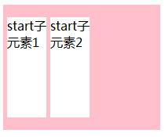

语法：
box-pack:取值
说明：
box-pack属性可以在水平方向上对盒子的富余空间进行管理。
当弹性元素与非弹性元素混合排版时，有可能会出现所有子元素的尺寸大于或小于盒子的尺寸，从而出现盒子空间不足或者富余的情况。这时就需要一种方法来管理盒子的空间。如果子元素的总尺寸小于盒子的尺寸，则可以使用box-align和box-pack属性进行管理。
| 属性值 | 说明 |
|---|---|
| start | 所有子元素都显示在盒子的左侧，富余的空间显示在盒子的右侧 |
| end | 所有子元素都显示在盒子的右侧，富余的空间显示在盒子的左侧 |
| justify | 富余的空间在子元素之间平均分配。在第一个子元素之前和最后一个字元素之后不分配空间 |
| center | 富余的空间在盒子的两侧平均分配 |
使用方法：
box-pack:start; /*所有子元素都显示在盒子的左侧，富余的空间显示在盒子的右侧*/
兼容性：
- 浅绿 = 支持
- 红色 = 不支持
- 粉色 = 部分支持
| 支持版本\类型 | IE | Firefox | Safari | Chrome | Opera |
|---|---|---|---|---|---|
| 较早版本 | 6.0-11.0 | 4.0.-25.0 -moz- | 5.1.7 -webkit- | 4.0-31.0 -webkit- | 9.5-14.0 |
| 较新版本 | 15.0-18.0 -webkit- |
- firefox支持box-pack的justify值但无效果。
橘色说明要加浏览器的前缀
事例：
div{
width:200px;
height:160px;
display:-moz-box;
-moz-box-pack:start;
background-color:pink;
}
div p{
width:50px;
height:50px;
background:red;
margin-left:5px;
}
